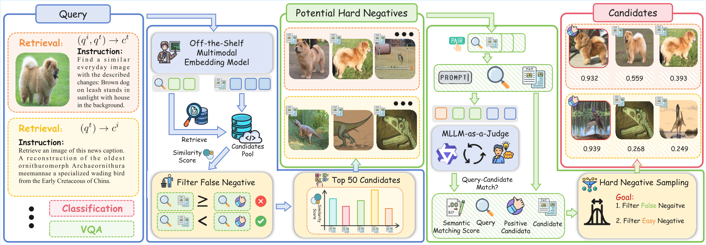

Motivated by the limitations of in-batch negative mining, which often yields low-diversity and low-quality negatives, we introduce an MLLM-as-a-Judge pipeline. This method first constructs a potential hard negative set via global retrieval. Then, a powerful MLLM is prompted to assess the semantic alignment of each query-candidate pair, generating a soft matching score.
Methodology
- Global Retrieval: Use VLM2Vec to select top-50 candidates as potential hard negatives.
- Semantic Scoring: Prompt an MLLM to evaluate query-candidate alignment and generate soft matching scores based on "Yes"/"No" token probabilities.
- Filtering & Sampling: Exclude false negatives via thresholding and apply cyclical sampling to ensure diverse, high-quality hard negatives.